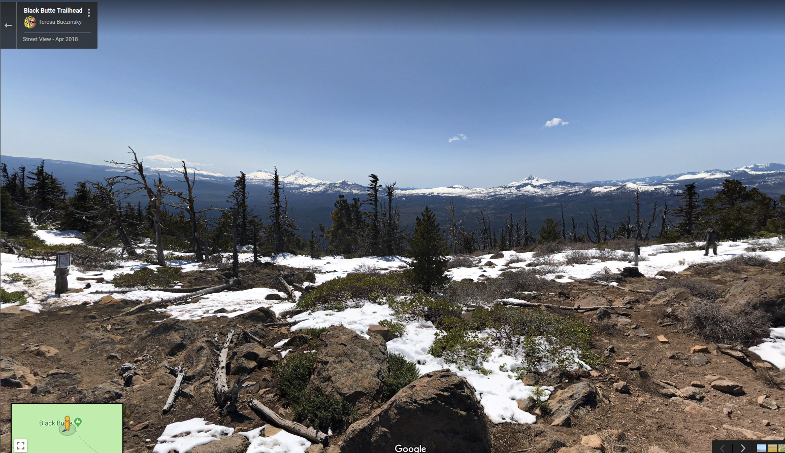

<!-- <script src="http://maps.googleapis.com/maps/api/js"></script> -->
<script async defer
       src="https://maps.googleapis.com/maps/api/js?key={{apiKEY}}&callback=initialize">
</script>

<!--  -->
<div id="pano" style="width:100%;height:800px"></div>
